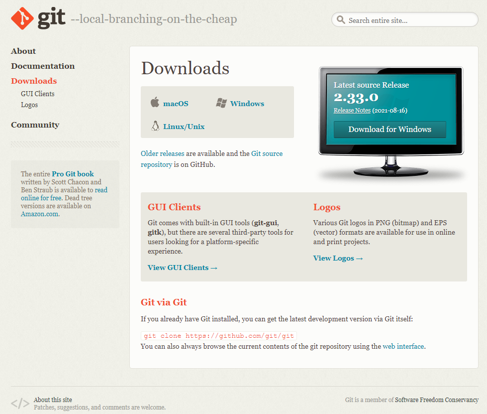
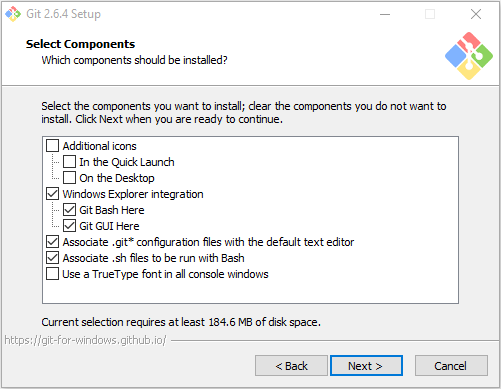
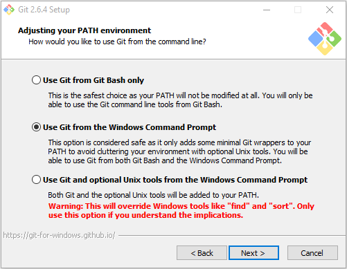
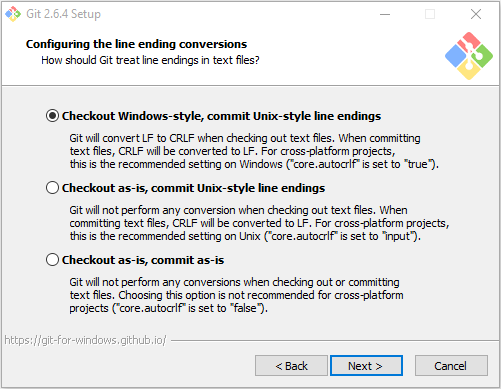
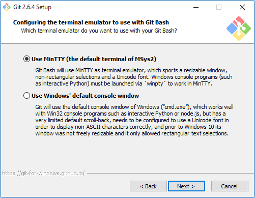
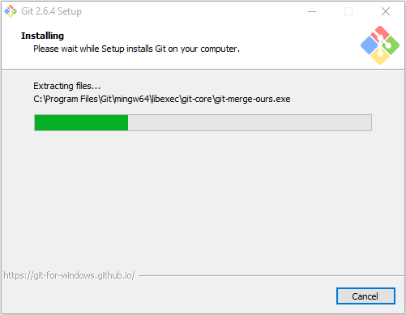
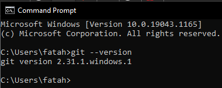

Cara Install Git pada Windows
Hai sobat, melanjutkan halaman perkenalan git kemarin, kali ini kita akan membahas bagaimana cara menginstall software Git pada Windows. Proses installasi cukup mudah dan singkat, adapun tahapanya adalah :
1. Download Git
Untuk mendownload Git, kalian bisa mengunjungi halaman : https://git-scm.com/downloads, selanjutnya tinggal klik bagian Windows, maka secara otomatis kita akan mendownload versi terbaru dengan tipe sistem sesuai dengan yang kita gunakan, 32 bit atau 64 bit.
Tampilan halaman download Git :

Setelah di download, jalankan instalernya dan ikuti wizard nya.
2. Welcome Screen
Wizard pertama kali dimulai dengan welcome screen, langsung saja klik Next >
3. Persetujuan lisensi
Halaman berikutnya adalah informasi mengenai lisensi penggunaan Git, klik Next >
4. Pilih lokasi instalasi
Selanjutnya kita diminta untuk memilih lokasi instalasi, defaultnya C:\Program Files\Git
5. Pilih Komponen
Pada bagian ini, kita dapat memilih komponen apa saja yang akan di install. Atau gunakan pilihan default saja, selanjutnya klik Next >

6. Buat nama pada start menu folder
Selanjutnya kita buat nama pada folder start menu, defaultnya adalah Git, setelah selesai, klik Next >
7. Pilih Environmet Git
Bagian ini kita akan memilih bagaimana kita menggunakan Git dari comman line, secara default installer akan memilih Use Git from Git Bash Only, opsi ini tidak akan merubah PATH environment, namun akan membuat perintah Git hanya dapat digunakan menggunkana Git Bash, untuk itu pilih bagian kedua yaitu Use Git from the Windows Command Promt, sehingga kita dapat menjalankan Git dari command promt bawaan windows, hal ini akan memudahkan kita ketika menggunakan Git bersamaan dengan command based program seperti Python Node.js (salah satunya digunakan untuk membuat custom jquery build).

8. Line Ending Environment
Pada bagian ini kita akan menentukan bagaimana Git memperlakukan line ending (baris baru), karakter line ending sendiri berbeda-beda tergantung sistem operasi yang digunkan, misal: Windows dan Mac OS menggunakan \r\n Mac OS, sedangkan linux menggunakan \n.
Pada pesan yang ada, terdapat istilah LF dan CRLF. LF merupakan kependekan dari Line Feed atau \n, CR kependekan dari Cariage Return atau \r, dan CRLF merupakan gabungan dari keduanya (\r\n). Karena pada Windows yang berlaku adalah CRLF, maka opsi yang pertama adalah yang paling tepat.

9. Pilih Terminal Emulator
Bagian ini kita menentukan terminal emulator yang akan kita gunakan ketika menggunakan terminal Git Bash (Linux style command line), terdapat dua pilihan yaitu menggunakan MinTTY yang dikembangkan dari basis linux atau menggunakan default console pada OS Windows.
Seperti kita ketahui command promt pada windows bersifat fixed size, sehingga tidak dapat diresize, disamping itu history command yang ditampilkan juga terbatas (scroll terbatas), dan perlu untuk melakukan pengaturan agar dapat menggunakan Unicode Font (khususnya non ASCII character), semua keterbatasan tersebut sudah tidak ada di Windows 10
Oleh karena itu, menurut saya lebih baik menggunakan MinTTY, disamping itu tampilan untuk versi MinTTY juga lebih bagus.

10. File System Chahcing
Pada bagian ini kita memilih apakah menggunakan sistem cache atau tidak, dengan cache akan meningkatkan perfoma aplikasi, namun pada versi yang saya gunakan, fitur ini masih dalam tahap pengembangan, sehingga saya memilih untuk tidak menggunakannya. Selanjutnya klik Next >
11. Proses Instalasi dimulai
Proses instalasi, seperti extract dan copy file mulai dilakukan, tunggu hingga proses selesai

Setelah proses instalasi selesai, klik FInish.
Uji Coba
Setelah proses instalasi selesai, ada baiknya di tes, untuk memastikan software telah terinstall sebagaimana mestinya. Untuk melakukannya, buka terminal windows dan jalankan perintah git --version, seperti tampak pada gambar berikut :
